현비서 E2E 기록 · 20261107-0949
| 케이스 | 내용 | 판정 | 걸린 시간 | 응답(말→답) |
|---|---|---|---|---|
| e00 | 시동 — 인사 · 브리핑 순서 | 통과 3/3 | 43.5초 | 5.1s |
| e01 | 네비 모드 — 말로 목적지 · 반반 화면 | 통과 3/3 | 23.7초 | 5.3s |
| e02 | 교통상황 — '앞길 어때?' · 내비 기준 교통 표 | 통과 2/2 | 24.3초 | 5.2s |
| e03 | 휴게소 소개 — 왼쪽 사진 · 오른쪽 표 | 통과 4/4 | 70.7초 | 5.4s, 13.1s |
| e04 | 취향 질문 — 묻고 · 대답을 취향으로 기록 | 통과 2/2 | 26.5초 | 5.2s, 11.4s |
| e05 | 웹툰 순위 — 표지 격자 | 통과 2/2 | 32.6초 | 5.7s |
| e06 | 영화 순위 — 목록 표 | 통과 2/2 | 21.4초 | 5.8s |
| e07 | 스포츠 기사 — 웹 검색 모드 | 통과 2/2 | 39.0초 | 13.0s |
| e08 | 인물 기사 — 사진 · 기사 표 | 통과 2/2 | 59.9초 | 13.0s |
| e09 | 주행 중 — 사고 정찰 · 휴게소 알림 | 통과 4/4 | 71.3초 | — |
| e10 | 글레오 — '현비서 지금 상황' 흉내 | 통과 1/1 | 5.6초 | — |
통과 e00 · 시동 — 인사 · 브리핑 순서 영상 0:00
새 데이터로 앱을 켜면 순서를 몰라 '뭐부터 들을까요?'를 묻고, 대답한 순서를 저장해 바로 그 순서로 브리핑한다
판정
- ✓ 시동 인사 이벤트
log: event\|hello - ✓ 브리핑 순서를 묻는다
log: say\|P\d\|.*(뭐부터|순서) - ✓ 대답한 순서(날씨 먼저) 저장
server: "brief_order": \["weather"
실제 대화·동작
| 0:02 | 길 | nav cancel|demo|null |
| 0:06 | 이벤트 | hello |
| 0:11 | 두뇌 | 답 도착 · claude |
| 0:11 | 현비서 P2 | 안녕하세요, 대전역까지 3시간 41분 걸려요. 오늘 브리핑은 뭐부터 들을까요? 날씨, 뉴스, 주식, 교통 중에 순서대로 말해 주세요. |
| 0:22 | 운전자 | 날씨 먼저 듣고 그다음 뉴스 |
| 0:25 | 현비서 P1 | 어디 보자. |
| 0:27 | 두뇌 | 답 도착 · claude |
| 0:27 | 현비서 P1 | 다음부터 이 순서로 할게요. 지금 2도, 체감 -3도에 맑고 비 소식은 없어요. 뉴스는 입동 전주에 첫 얼음, 서학개미 미국주식 3조 매수, 오픈AI는 데이터센터 투자 계속이래요. |
화면
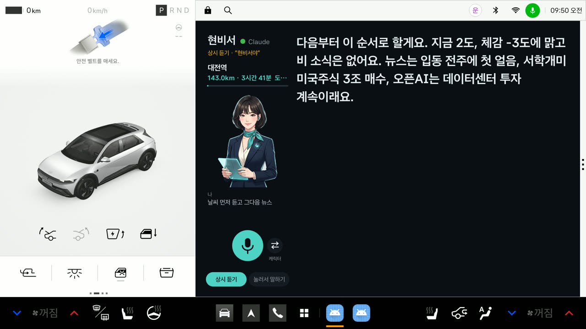
단계
- +0.1s {"do": "split", "on": false} — 1칸
- +2.5s {"do": "restart"}
- +21.8s {"wait": "reply", "timeout": 45} — 답 도착
- +21.9s {"do": "say", "text": "날씨 먼저 듣고 그다음 뉴스", "voice": false} — 글(마이크 없이) 「날씨 먼저 듣고 그다음 뉴스」
- +40.4s {"wait": "reply", "timeout": 60} — 답 도착
- +42.0s {"shot": "시동 브리핑"} — 시동 브리핑
통과 e01 · 네비 모드 — 말로 목적지 · 반반 화면 영상 0:44
'현비서야 강남역 가자'(실제 음성 → 받아 적기 → 호출어 → 두뇌)로 내비 경로를 잡고, 앱 영역 2칸으로 왼쪽 현비서 · 오른쪽 내비를 나란히 띄운다
판정
- ✓ 귀가 호출어와 목적지를 받아 적음
log: ear\|wake\+text\|.*강남 - ✓ 두뇌가 목적지를 정함
log: nav\|강남역 - ✓ 내비 경로 시작
log: navi\|routeStarted
실제 대화·동작
| 0:45 | 귀 | 받아 적음 「현비서야 강남역 가자」 · 567ms |
| 0:45 | 운전자 | 강남역 가자 |
| 0:48 | 현비서 P1 | 음, 잠깐만요. |
| 0:50 | 두뇌 | 답 도착 · claude |
| 0:50 | 길 | nav 강남역|37.4979,127.0276|est=14521m |
| 0:50 | 현비서 P1 | 강남역으로 안내 시작할게요. 앞쪽 판교 쪽이 조금 막히니 천천히 가요. |
| 0:51 | 내비 | cancelled |
| 0:57 | 내비 | routeStarted RouteStartInfo(duration=1740, distance=13000, tollFare=700, name=강남역, remainDestinationChargingValue=75739) |
화면
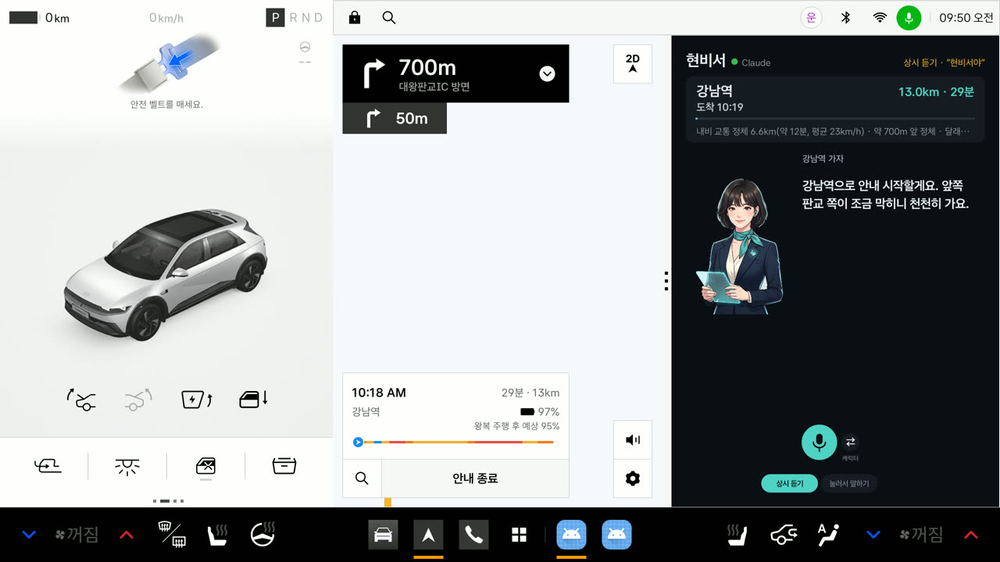
단계
- +0.6s {"do": "say", "text": "강남역 가자", "voice": true} — 음성 2.5초 「현비서야 강남역 가자」
- +13.9s {"wait": "log", "pattern": "navi\\|routeStarted", "timeout": 50} — 확인
- +13.9s {"wait": "tts"}
- +16.7s {"do": "split", "on": true} — 2칸(내비와 나란히)
- +20.7s {"wait": "sec", "sec": 4}
- +22.2s {"shot": "반반 — 왼쪽 현비서 · 오른쪽 내비"} — 반반 — 왼쪽 현비서 · 오른쪽 내비
통과 e02 · 교통상황 — '앞길 어때?' · 내비 기준 교통 표 영상 1:08
내비가 준 내 경로 교통(정체 구간·도로명·속도)을 말로 답하고, 정차 화면에 서버가 내비 값으로 만든 표를 띄운다(반반 화면 그대로)
판정
- ✓ 내비 기준으로 교통을 말함
log: say\|P1\|.*(내비|정체|막히|교통) - ✓ 교통 표 카드
log: card\|앞길 교통
실제 대화·동작
| 1:09 | 귀 | 받아 적음 「현비서야 앞길 어때?」 · 544ms |
| 1:09 | 운전자 | 앞길 어때? |
| 1:13 | 현비서 P1 | 생각해 볼게요. |
| 1:14 | 두뇌 | 답 도착 · claude · 카드 「앞길 교통 · 강남역까지 29분(도착 10:19)」 |
| 1:14 | 카드 | 앞길 교통 · 강남역까지 29분(도착 10:19)|6|kind=list|img=0|약 700m 앞 정체 — 달래내로 50m · 평균 25km/h · 약 1분 / 약 700m 앞 서행 — 경부고속도로 대왕판교IC 100m · 평균 52km/h · 약 1분 / 약 2.5km 앞 정체 — 경부고속도로 금토JC 1.6km · 평균 58km/h · 약 1분 |
| 1:14 | 현비서 P1 | 내비 교통정보 기준으로 양재IC 쪽 약 8km 앞이 제일 막혀요, 거기서 8분쯤 걸려요. 전체로는 정체 6.6km, 12분 정도 늦어요. 우회할까요? |
화면
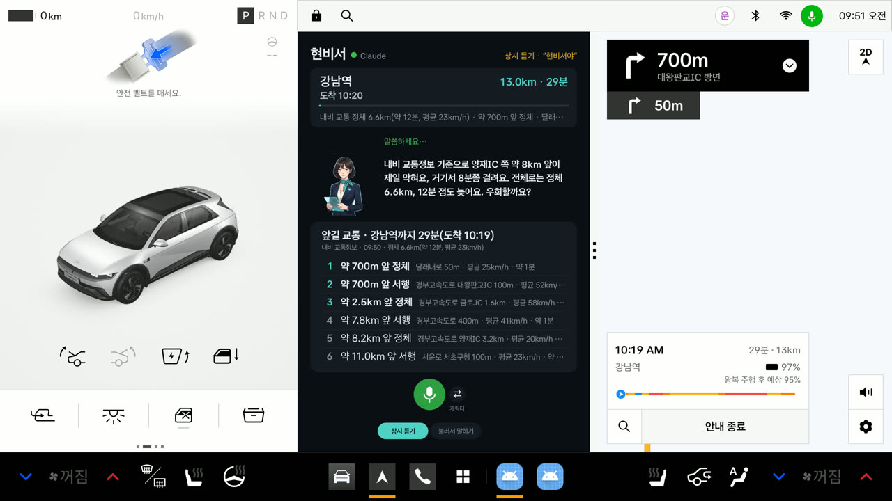
단계
- +0.6s {"do": "say", "text": "앞길 어때?", "voice": true} — 음성 2.3초 「현비서야 앞길 어때?」
- +19.1s {"wait": "reply", "timeout": 50} — 답 도착
- +21.1s {"wait": "sec", "sec": 2}
- +22.8s {"shot": "교통 표(반반)"} — 교통 표(반반)
통과 e03 · 휴게소 소개 — 왼쪽 사진 · 오른쪽 표 영상 1:32
고속도로 길(대전역)을 잡고 '다음 휴게소 소개해 줘' → 검색으로 확인한 휴게소 정보 + 취향 맞춤 추천을 소개 카드(사진 · 표)로
판정
- ✓ 고속도로 목적지 설정
log: nav\|대전 - ✓ 휴게소 소개 카드(info)
log: card\|.*휴게소.*kind=info - ✓ 카드에 사진
log: card\|.*kind=info\|img=1 - ✓ 검색 모드로 확인
server: claude\+search
실제 대화·동작
| 1:36 | 귀 | 받아 적음 「현비서야 대전역 가자.」 · 640ms |
| 1:36 | 운전자 | 대전역 가자. |
| 1:40 | 현비서 P1 | 어디 보자. |
| 1:41 | 두뇌 | 답 도착 · claude |
| 1:41 | 길 | nav 대전역|36.3322,127.4343|est=161054m |
| 1:41 | 내비 | cancelled |
| 1:42 | 현비서 P1 | 대전역으로 목적지 바꿔서 안내 시작할게요. |
| 1:50 | 내비 | routeStarted RouteStartInfo(duration=13200, distance=143000, tollFare=5740, name=대전역, remainDestinationChargingValue=58542) |
| 1:57 | 귀 | 받아 적음 「현비서야 다음 휴게소 소개해줘.」 · 638ms |
| 1:57 | 운전자 | 다음 휴게소 소개해줘. |
| 2:01 | 현비서 P1 | 음, 잠깐만요. |
| 2:10 | 현비서 P1 | 조금만 더 찾아볼게요. |
| 2:17 | 두뇌 | 답 도착 · claude+search · 카드 「기흥휴게소 부산방향 (추정)」 |
| 2:17 | 카드 | 기흥휴게소 부산방향 (추정)|4|kind=info|img=1|위치 — 경부고속도로 부산방향 · 판교 다음 휴게소로 추정 / 대표 메뉴 — 향천우동 · 푸드코트 라면 · 호두과자 / 편의 — 푸드코트 · 기념품 매장 · 편의점 · 넓은 화장실 |
| 2:17 | 현비서 P1 | 경부선 부산방향으로 가면 아마 기흥휴게소예요. 향천우동이 유명하고 푸드코트 라면, 호두과자도 괜찮대요. 자세한 건 정차하면 화면에서 보세요. |
화면
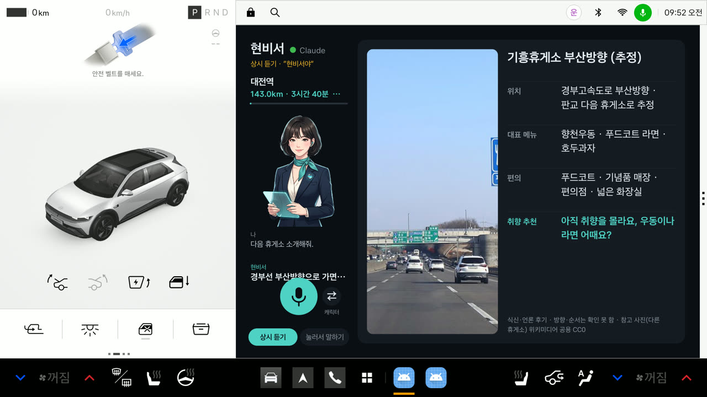
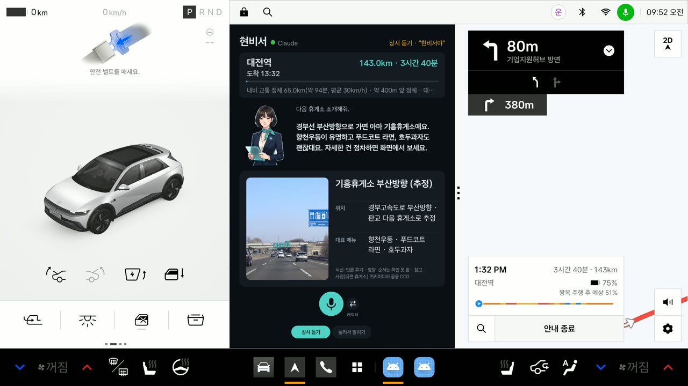
단계
- +2.8s {"do": "split", "on": false} — 1칸
- +3.4s {"do": "say", "text": "대전역 가자", "voice": true} — 음성 2.4초 「현비서야 대전역 가자」
- +18.3s {"wait": "log", "pattern": "navi\\|routeStarted", "timeout": 50} — 확인
- +18.3s {"wait": "tts"}
- +23.3s {"wait": "sec", "sec": 5}
- +23.9s {"do": "say", "text": "다음 휴게소 소개해 줘", "voice": true} — 음성 3.1초 「현비서야 다음 휴게소 소개해 줘」
- +56.0s {"wait": "reply", "timeout": 75} — 답 도착
- +60.0s {"wait": "sec", "sec": 4}
- +61.7s {"shot": "휴게소 소개 카드(전체 화면)"} — 휴게소 소개 카드(전체 화면)
- +64.5s {"do": "split", "on": true} — 2칸(내비와 나란히)
- +67.5s {"wait": "sec", "sec": 3}
- +69.2s {"shot": "휴게소 소개 카드(반반)"} — 휴게소 소개 카드(반반)
통과 e04 · 취향 질문 — 묻고 · 대답을 취향으로 기록 영상 2:43
아직 모르는 취향 칸을 한 번 묻고(asked_slot), 운전자 대답을 그 칸에 누적한다
판정
- ✓ 취향 질문을 했다(칸 기록)
server: "asked_slot": "[a-z]+" - ✓ 대답을 취향으로 기록(아이유)
server: "taste": \[[^\]]*아이유
실제 대화·동작
| 2:44 | 귀 | 받아 적음 「현비서야 심심한데 나에 대해 하나만 물어봐줘.」 · 792ms |
| 2:44 | 운전자 | 심심한데 나에 대해 하나만 물어봐줘. |
| 2:48 | 현비서 P1 | 생각해 볼게요. |
| 2:49 | 두뇌 | 답 도착 · claude |
| 2:49 | 현비서 P1 | 좋아요, 하나만 물을게요. 평소에 제일 좋아하는 음식이 뭐예요? |
| 2:54 | 운전자 | 운전할 땐 아이유 노래 자주 들어 |
| 3:00 | 두뇌 | 답 도착 · claude |
| 3:04 | 현비서 P1 | 어디 보자. |
| 3:06 | 현비서 P1 | 아이유 노래 좋아하시는군요, 기억해 둘게요. 대전까지 길이 머니까 아이유 노래 들으며 편하게 가요. |
화면
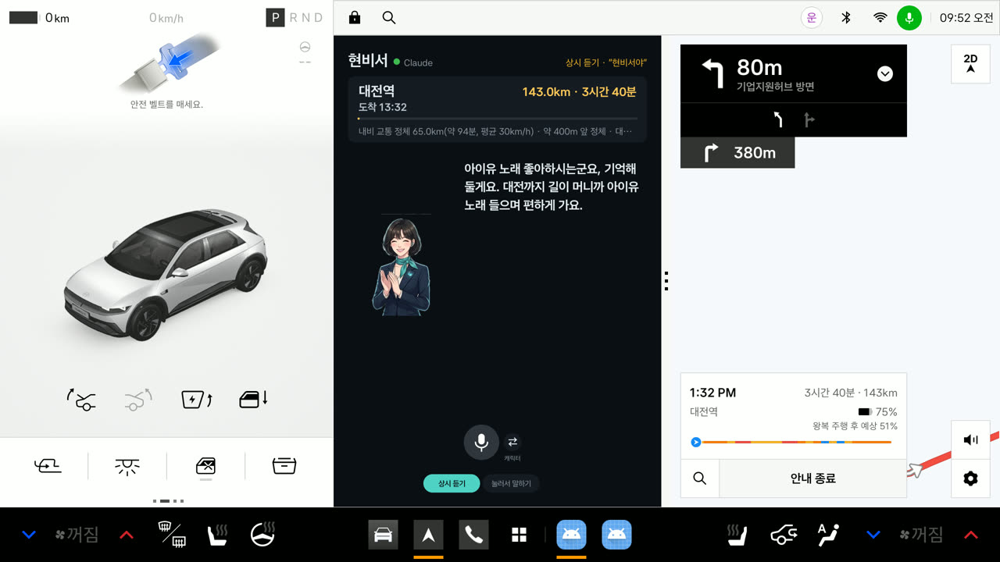
단계
- +0.7s {"do": "say", "text": "심심한데 나에 대해 하나만 물어봐 줘", "voice": true} — 음성 4.3초 「현비서야 심심한데 나에 대해 하나만 물어봐 줘」
- +11.6s {"wait": "reply", "timeout": 50} — 답 도착
- +11.7s {"do": "say", "text": "운전할 땐 아이유 노래 자주 들어", "voice": false} — 글(마이크 없이) 「운전할 땐 아이유 노래 자주 들어」
- +23.4s {"wait": "reply", "timeout": 50} — 답 도착
- +25.0s {"shot": "취향 기록 뒤"} — 취향 기록 뒤
통과 e05 · 웹툰 순위 — 표지 격자 영상 3:10
정보 통로(네이버 웹툰)의 순위를 앞 3개만 말하고, 10개를 표지 그림 격자로
판정
- ✓ 웹툰 카드에 표지 그림
log: card\|.*웹툰.*img=([1-9]|10) - ✓ 순위를 말함
log: say\|P1\|.*
실제 대화·동작
| 3:11 | 귀 | 받아 적음 「현비서야 웹툰 순위 알려줘.」 · 735ms |
| 3:11 | 운전자 | 웹툰 순위 알려줘. |
| 3:15 | 현비서 P1 | 음, 잠깐만요. |
| 3:17 | 두뇌 | 답 도착 · claude · 카드 「토요 웹툰 인기 TOP 10」 |
| 3:17 | 카드 | 토요 웹툰 인기 TOP 10|10|kind=image_list|img=10|절대군림 — 박시대 / 장영훈 / 호랑이형님 — 이상규 / 마도전생기 — 포스스튜디오 / codezero |
| 3:17 | 현비서 P1 | 네이버 웹툰 토요 인기순이에요. 1위 절대군림, 2위 호랑이형님, 3위 마도전생기예요. 정차하면 화면에서 보세요. |
화면
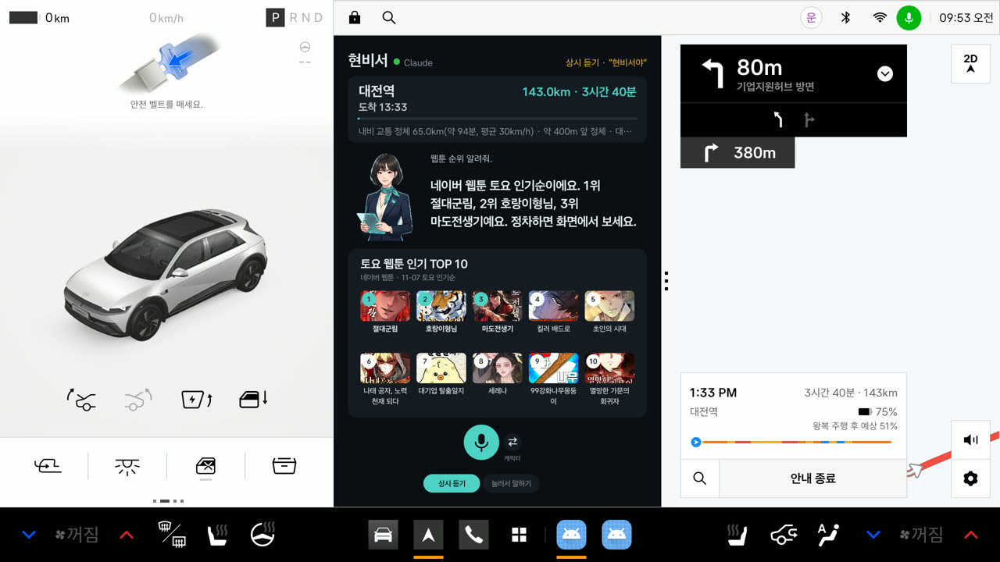
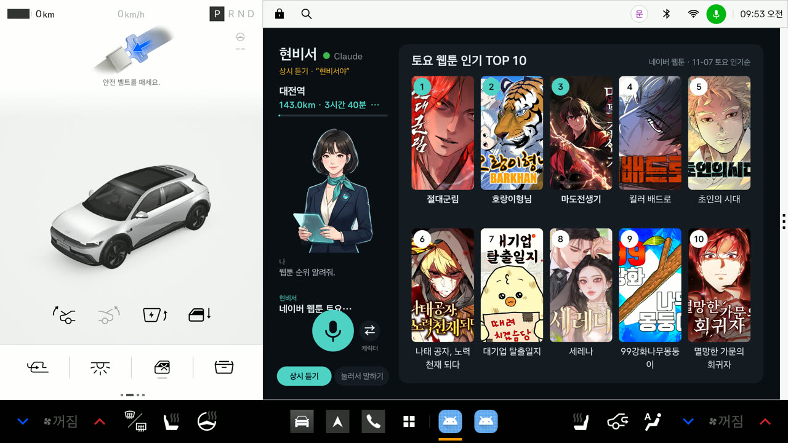
단계
- +0.7s {"do": "say", "text": "웹툰 순위 알려줘", "voice": true} — 음성 2.9초 「현비서야 웹툰 순위 알려줘」
- +16.3s {"wait": "reply", "timeout": 50} — 답 도착
- +21.3s {"wait": "sec", "sec": 5}
- +23.1s {"shot": "웹툰 표지 격자(반반)"} — 웹툰 표지 격자(반반)
- +25.9s {"do": "split", "on": false} — 1칸
- +28.9s {"wait": "sec", "sec": 3}
- +31.1s {"shot": "웹툰 표지 격자(전체)"} — 웹툰 표지 격자(전체)
통과 e06 · 영화 순위 — 목록 표 영상 3:43
영화진흥위원회 박스오피스(어제 기준)를 앞 3개 말하고 10개 목록 표
판정
- ✓ 영화 순위 목록 카드
log: card\|.*(영화|박스).*kind=list - ✓ 출처·기준을 붙여 말함
log: say\|P1\|.*(영화진흥|기준|1위)
실제 대화·동작
| 3:44 | 귀 | 받아 적음 「현비서야 요즘 영화 순위 알려줘.」 · 609ms |
| 3:44 | 운전자 | 요즘 영화 순위 알려줘. |
| 3:48 | 현비서 P1 | 생각해 볼게요. |
| 3:50 | 두뇌 | 답 도착 · claude · 카드 「영화 박스오피스 TOP 10」 |
| 3:50 | 카드 | 영화 박스오피스 TOP 10|10|kind=list|img=0|최종면접 — 22,751명 / 하트 오브 비스트 — 20,172명 / 극장판 치이카와: 인어 섬의 비밀 — 18,455명 |
| 3:50 | 현비서 P1 | 영화진흥위원회 어제 기준이에요. 1위 최종면접, 2위 하트 오브 비스트, 3위 극장판 치이카와예요. 나머지는 화면에 띄웠어요. |
화면
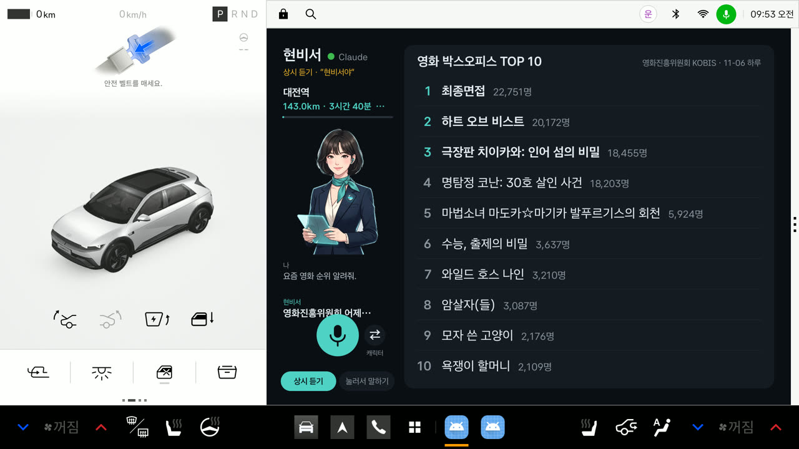
단계
- +0.6s {"do": "say", "text": "요즘 영화 순위 알려줘", "voice": true} — 음성 3.2초 「현비서야 요즘 영화 순위 알려줘」
- +16.3s {"wait": "reply", "timeout": 50} — 답 도착
- +18.3s {"wait": "sec", "sec": 2}
- +19.9s {"shot": "영화 순위 표"} — 영화 순위 표
통과 e07 · 스포츠 기사 — 웹 검색 모드 영상 4:04
통로에 없는 최신 스포츠 소식은 내 Claude 계정 두뇌가 웹 검색으로 찾아 날짜·결과·매체와 함께
판정
- ✓ 검색 모드로 답함
server: claude\+search - ✓ 소식을 말함
log: say\|P1\|.{20,}
실제 대화·동작
| 4:06 | 귀 | 받아 적음 「현비서야 요즘 야구 소식 알려줘.」 · 658ms |
| 4:06 | 운전자 | 요즘 야구 소식 알려줘. |
| 4:10 | 현비서 P1 | 어디 보자. |
| 4:19 | 현비서 P1 | 조금만 더 찾아볼게요. |
| 4:30 | 두뇌 | 답 도착 · claude+search · 카드 「2026 한국시리즈 현황」 |
| 4:30 | 카드 | 2026 한국시리즈 현황|4|kind=list|img=0|1차전 · KT 8:7 삼성 / 2차전 · 삼성 승리 (KT 1승 1패) / 3차전 · 삼성 5:1 KT (삼성 2승 1패) |
| 4:30 | 현비서 P1 | 한국시리즈가 한창이에요. 삼성이 KT에 2승 1패로 앞서 있고, 오늘 대구에서 4차전이 열려요. 정차하면 화면에서 보세요. |
화면
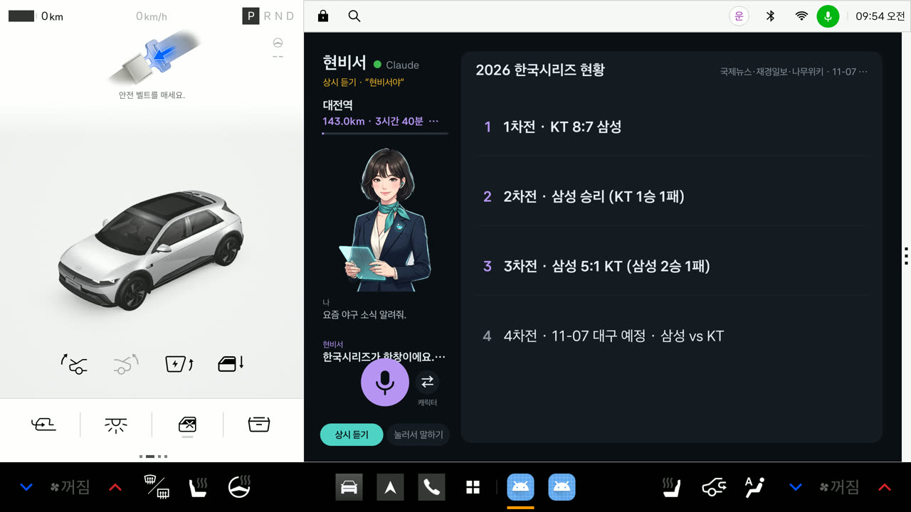
단계
- +0.6s {"do": "say", "text": "요즘 야구 소식 알려줘", "voice": true} — 음성 3.2초 「현비서야 요즘 야구 소식 알려줘」
- +33.9s {"wait": "reply", "timeout": 75} — 답 도착
- +35.9s {"wait": "sec", "sec": 2}
- +37.5s {"shot": "야구 소식"} — 야구 소식
통과 e08 · 인물 기사 — 사진 · 기사 표 영상 4:44
인물 근황은 검색해서 소개 카드(왼쪽 인물 사진 — 위키미디어 공용 · 오른쪽 날짜 · 매체 — 기사 요지)
판정
- ✓ 검색 모드로 답함
server: claude\+search - ✓ 인물 사진 소개 카드
log: card\|.*kind=info\|img=1
실제 대화·동작
| 4:46 | 귀 | 받아 적음 「현비서야 손흥민 최근 기사 알려줘.」 · 684ms |
| 4:46 | 운전자 | 손흥민 최근 기사 알려줘. |
| 4:49 | 현비서 P1 | 음, 잠깐만요. |
| 4:59 | 현비서 P1 | 조금만 더 찾아볼게요. |
| 5:17 | 두뇌 | 답 도착 · claude+search · 카드 「손흥민 최근 기사」 |
| 5:17 | 카드 | 손흥민 최근 기사|5|kind=info|img=1|10-26 · 강원일보 — LA 갤럭시와 2-2 무승부, 플레이오프 진출 확정 / 10-26 · 싱글리스트 — 전반 28분 골은 오프사이드로 취소, 풀타임 소화 / 10-26 · 재경일보 — 동점골은 손흥민 크로스가 굴절돼 나왔지만 도움은 불인정 |
| 5:17 | 현비서 P1 | 손흥민 선수는 10월 26일 LA 갤럭시와 2대2로 비겨 LAFC의 플레이오프 진출을 확정했어요. 풀타임 뛰었고 이번 시즌 MLS 7골 15도움이에요. |
화면
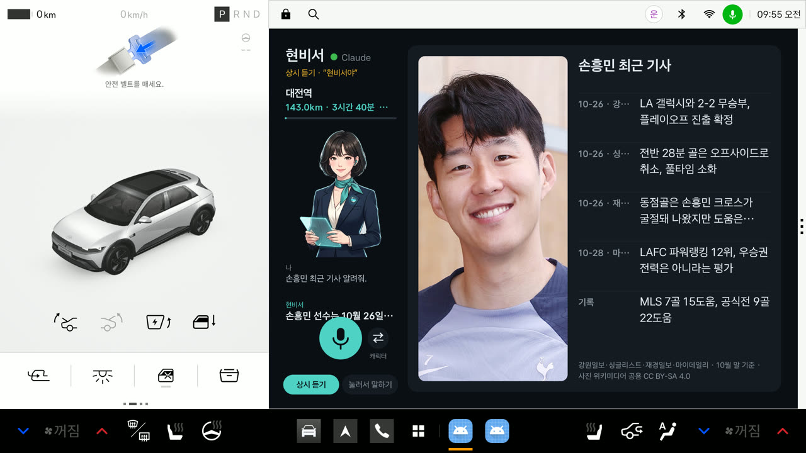
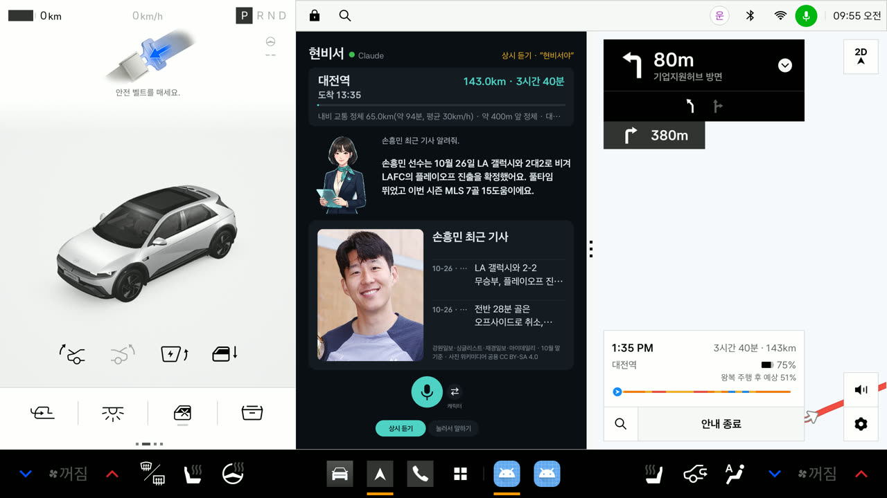
단계
- +0.6s {"do": "say", "text": "손흥민 최근 기사 알려줘", "voice": true} — 음성 3.4초 「현비서야 손흥민 최근 기사 알려줘」
- +44.8s {"wait": "reply", "timeout": 75} — 답 도착
- +48.8s {"wait": "sec", "sec": 4}
- +50.9s {"shot": "인물 기사 카드(전체)"} — 인물 기사 카드(전체)
- +53.7s {"do": "split", "on": true} — 2칸(내비와 나란히)
- +56.7s {"wait": "sec", "sec": 3}
- +58.4s {"shot": "인물 기사 카드(반반)"} — 인물 기사 카드(반반)
통과 e09 · 주행 중 — 사고 정찰 · 휴게소 알림 영상 5:44
D·60km/h로 달리며 300m 앞 사고(갈림길 없음 → 우회 묻지 않음, 앱 P0 먼저)와 3km 앞 휴게소 알림(말만 — 주행 중 카드 숨김)
판정
- ✓ 앱이 먼저 사고 경고(P0)
log: say\|P0\|.*사고 - ✓ 우회 타이밍 판정
log: scout\|demo\|사고\|sev=3\|ahead=300\|detour=(none|possible|unknown) - ✓ 휴게소 알림 이벤트
log: event\|restarea - ✓ 휴게소를 말로 소개(주행 중 — 카드는 숨김)
log: say\|P\d\|.*휴게소
실제 대화·동작
| 5:44 | 길 | nav 대전역|36.33219909667969,127.4343032836914|est=161054m |
| 5:44 | 내비 | cancelled |
| 5:55 | 내비 | routeStarted RouteStartInfo(duration=13320, distance=143000, tollFare=5740, name=대전역, remainDestinationChargingValue=58515) |
| 6:00 | 이벤트 | depart |
| 6:02 | 정찰 | 사고|sev=3|ahead=300|detour=none@400|사고 · 약 300m · 경부고속도로 1차로 추돌 사고 |
| 6:02 | 현비서 P0 | 300미터 앞 사고 정보예요. 돌아갈 길은 없어요. 차로 지키고 천천히 가요. |
| 6:05 | 두뇌 | 답 도착 · claude |
| 6:12 | 두뇌 | 답 도착 · claude |
| 6:14 | 휴게소 | 기흥휴게소|2800m |
| 6:14 | 이벤트 | restarea|{"restName":"기흥휴게소","aheadM":2800} |
| 6:14 | 현비서 P1 | 대전역까지 3시간 42분, 13시 37분 도착이에요. 내비 기준 판교 쪽이 막혀서 천천히 가요. |
| 6:20 | 두뇌 | 답 도착 · claude+search |
| 6:44 | 현비서 P1 | 앞에 추돌 사고 때문에 막혀요. 돌아갈 길은 없어요, 속도 줄이고 천천히 가요. |
| 6:50 | 현비서 P2 | 경부고속도로 타면 기흥휴게소가 나와요. 정체가 길어서 거기서 한숨 돌려도 좋겠어요. |
화면
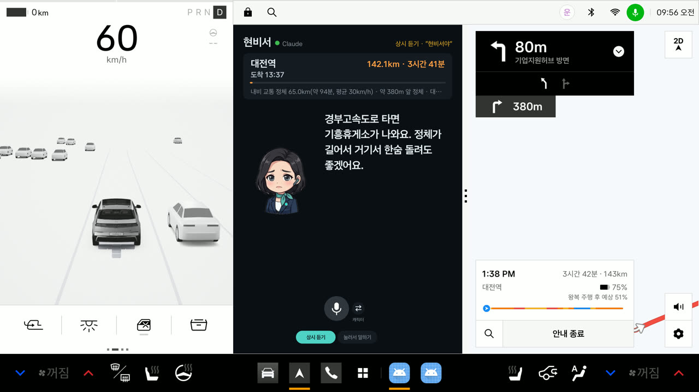
단계
- +0.1s {"do": "intent", "extras": "--es dest 대전역 --ef lat 36.3322 --ef lng 127.4343"} — --es dest 대전역 --ef lat 36.3322 --ef lng 127.4343
- +11.4s {"wait": "log", "pattern": "navi\\|routeStarted", "timeout": 40} — 확인
- +12.8s {"do": "vc", "args": ["gear", "Drive"]} — gear Drive
- +14.0s {"do": "vc", "args": ["speed", "60"]} — speed 60
- +18.0s {"wait": "sec", "sec": 4}
- +18.2s {"do": "intent", "extras": "--es traffic 'accident|300|경부고속도로 1차로 추돌 사고'"} — --es traffic 'accident|300|경부고속도로 1차로 추돌 사고'
- +29.5s {"wait": "reply", "timeout": 45} — 답 도착
- +29.6s {"do": "intent", "extras": "--es restarea '기흥휴게소|2800'"} — --es restarea '기흥휴게소|2800'
- +65.7s {"wait": "log", "pattern": "say\\|P\\d\\|.*휴게소", "timeout": 100} — 확인
- +65.7s {"wait": "tts"}
- +67.1s {"shot": "주행 중 화면"} — 주행 중 화면
- +68.5s {"do": "vc", "args": ["speed", "0"]} — speed 0
- +69.8s {"do": "vc", "args": ["gear", "Park"]} — gear Park
통과 e10 · 글레오 — '현비서 지금 상황' 흉내 영상 6:56
Gleo Interface 액션(HYUN_STATUS)에 7초 안에 영어 상황 문장으로 응답
판정
- ✓ 목적지·남은 시간 영어 응답
log: gleo\|response\|.*Heading to
실제 대화·동작
| 6:55 | 글레오 | action|HYUN_STATUS|{"item":"all"} |
| 6:55 | 글레오 | response|{"functionName":"HYUN_STATUS","status":"success","message":"Heading to 대전역: 142.1 km and about 221 minutes left, arriving at 13:37. The navigation reports 65.0km of congestion, about 94 minutes of delay on the route. The nearest is heavy congestion in 6.3km.","mode":"voice"} |
화면
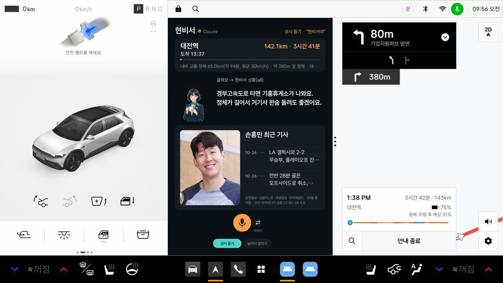
단계
- +0.1s {"do": "gleo", "action": "HYUN_STATUS", "param": {"item": "all"}} — HYUN_STATUS {'item': 'all'}
- +0.1s {"wait": "log", "pattern": "gleo\\|response", "timeout": 10} — 확인
- +2.1s {"wait": "sec", "sec": 2}
- +4.1s {"shot": "글레오 응답"} — 글레오 응답